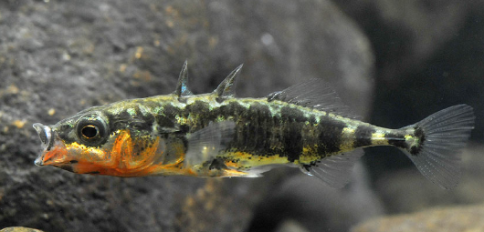

Systématique
- Ordre : Gasterosteiformes
- Famille : Gasterosteidae
- Genre : Gasterosteus
- Espèce : G. aculeatus
- Auteur : Linnaeus, 1758

Gasterosteus aculeatus, communément appelée Épinoche à trois épines, est un petit poisson célèbre pour sa capacité d'adaptation et ses comportements reproducteurs complexes. Elle se caractérise par la présence de 3 (parfois 2 ou 4) épines dorsales mobiles et isolées devant la nageoire dorsale, ainsi que par l'absence d'écailles, remplacées selon les populations par des plaques osseuses latérales appelées scutelles.
Sa taille varie généralement entre 4 et 8 cm. Sa coloration est argentée ou olivâtre au repos, mais subit une métamorphose spectaculaire chez le mâle durant la saison des amours : son ventre et sa gorge deviennent rouge vif, tandis que son iris vire au bleu turquoise.
C'est un poisson extrêmement résistant et territorial. L'épinoche est euryhaline, ce qui signifie qu'elle peut vivre aussi bien en eau douce qu'en eau saumâtre ou marine (certaines populations sont migratrices anadromes). Elle possède une vision excellente et un comportement social marqué, vivant souvent en bancs en dehors de la période de reproduction.
En période de frai, le mâle devient solitaire et agressif. Il construit un nid élaboré au sol à l'aide de débris végétaux cimentés par une protéine sécrétée par ses reins, la spiggine. Il défend ensuite farouchement ce nid contre tout intrus.
Mode : Ovipare avec soins parentaux exclusifs du mâle.
Le rituel nuptial est l'un des plus étudiés en éthologie : le mâle effectue une "danse en zigzag" pour attirer une femelle gravide vers son nid. Une fois que la femelle a pondu et quitté le nid, le mâle féconde les œufs et prend seul en charge la ventilation et la protection du frai.
Il aère les œufs en créant un courant d'eau avec ses nageoires pectorales. À l'éclosion (environ 7 à 10 jours), le mâle protège les alevins et les ramène dans sa bouche s'ils s'éloignent trop du nid. Ce comportement protecteur dure jusqu'à ce que les jeunes soient totalement autonomes.
Dimorphisme sexuel : Très marqué en période de frai. Le mâle arbore une gorge rouge éclatante et des yeux bleus, alors que la femelle reste terne avec un abdomen distendu par les œufs. Hors reproduction, les sexes sont difficiles à distinguer, bien que la femelle soit souvent légèrement plus grande.
Espérance de vie : 2 à 3 ans en moyenne. C'est une espèce à cycle de vie court.
L'épinoche occupe une vaste distribution dans l'hémisphère Nord (Europe, Asie du Nord, Amérique du Nord). Elle fréquente les zones littorales, les estuaires, les rivières à courant lent, les fossés et les lacs. Elle apprécie les zones riches en végétation aquatique qui lui fournissent protection et matériaux pour son nid.
Elle tolère des conditions environnementales variées, mais reste sensible à la pollution chimique et à la destruction des zones humides littorales.
Répartition

Origine naturelle :
- Hémisphère Nord : Zones tempérées et subarctiques.
- Présente sur toutes les côtes françaises et dans la majorité des réseaux hydrographiques intérieurs.
Statut UICN : Préoccupation mineure (LC). Espèce très commune et non menacée globalement.
Paramètres de maintenance
Température : 4 à 20 °C (Supporte mal les eaux stagnantes au-delà de 22 °C).
pH : 7,0 à 8,5.
GH : 10 à 30 °dGH (Préfère les eaux dures ou saumâtres).
Courant : Faible à modéré.
Volume conseillé : 80-100 L pour un petit groupe. Un repos hivernal au froid est nécessaire pour déclencher la reproduction.
Régime alimentaire
Régime : Carnivore opportuniste.
Dans la nature, elle consomme de petits crustacés (daphnies, gammares), des larves d'insectes (vers de vase), des vers et parfois des œufs ou alevins d'autres poissons.
En aquarium, elle accepte difficilement les paillettes. Il est recommandé de fournir du vivant ou du congelé pour maintenir sa vigueur.